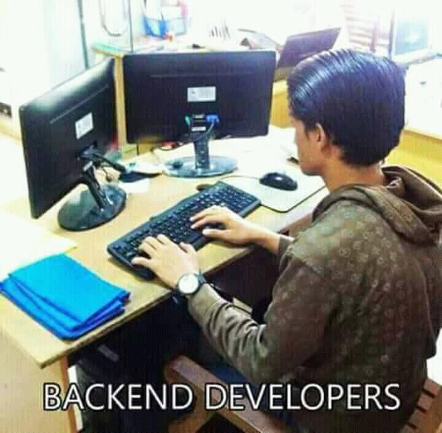

World Why Web?

Everybody
wants one
needs one
Good compensation
If you plan your career wisely
Who is it for?
It's for everyone (who is willing to learn)
Where Should I start?
roadmapsFrontend Developer


Backend Developer
